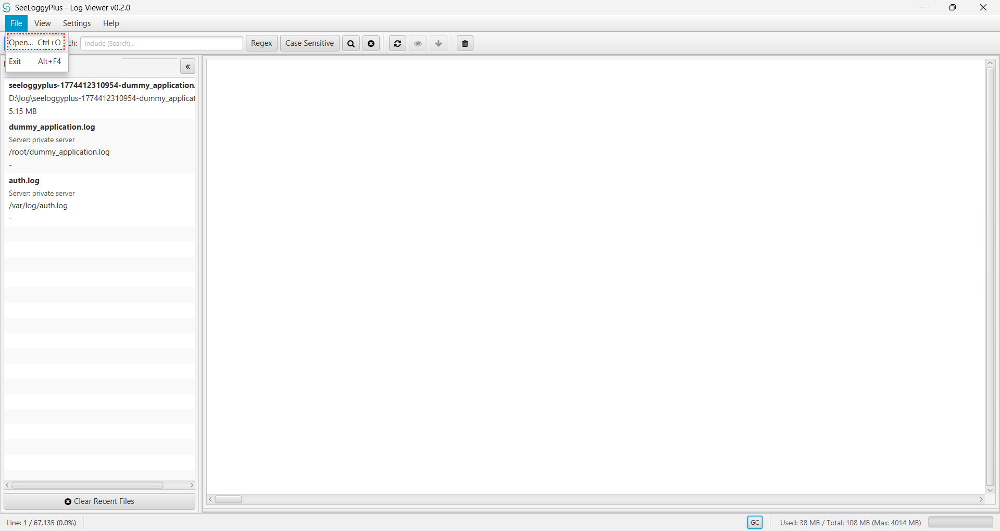
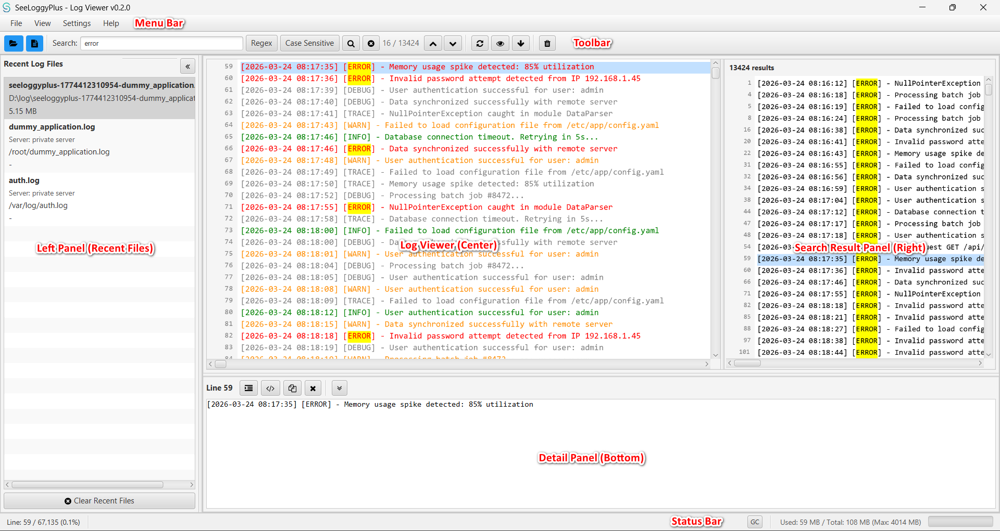
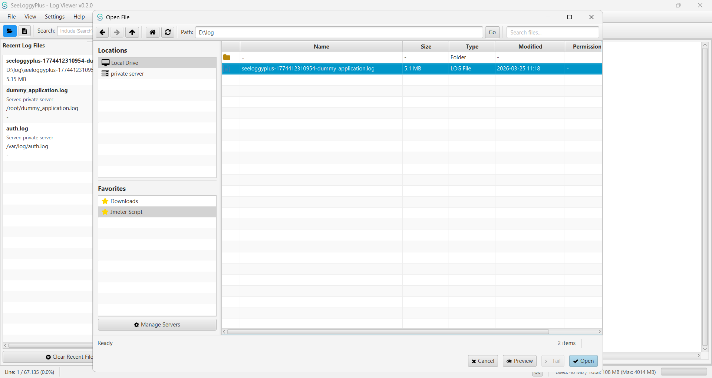
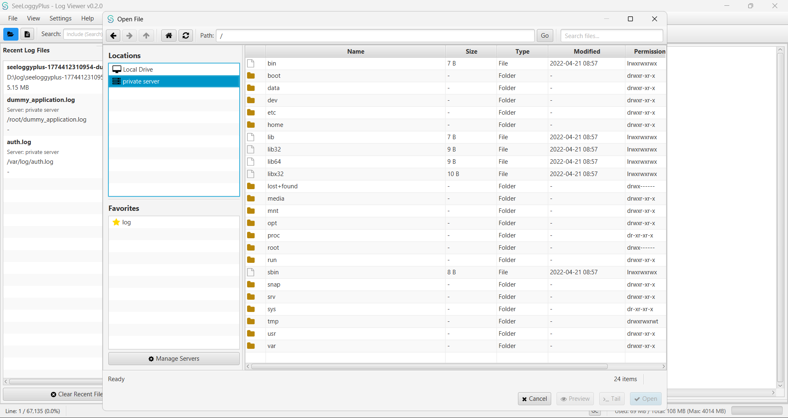
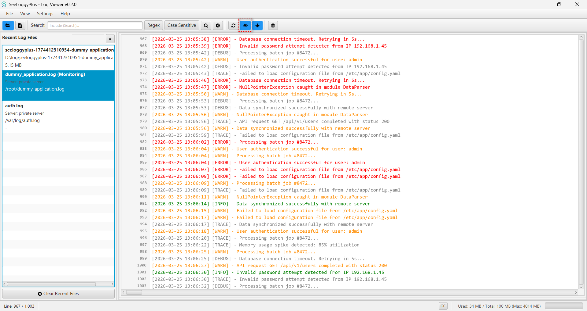
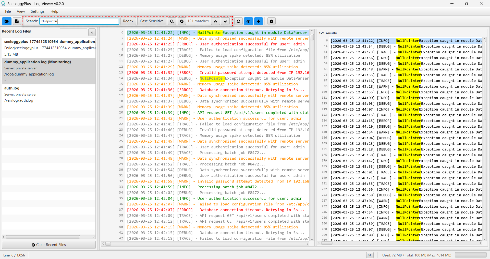
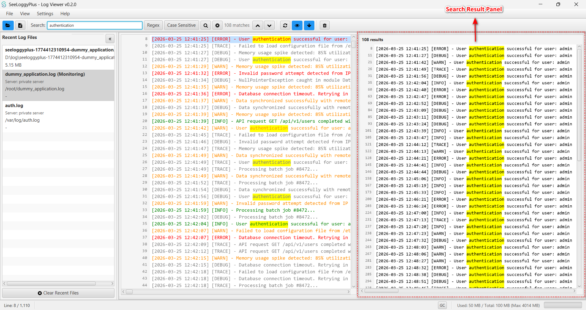
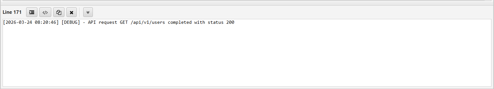
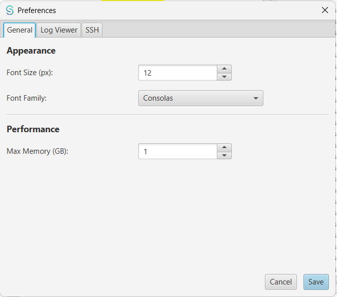
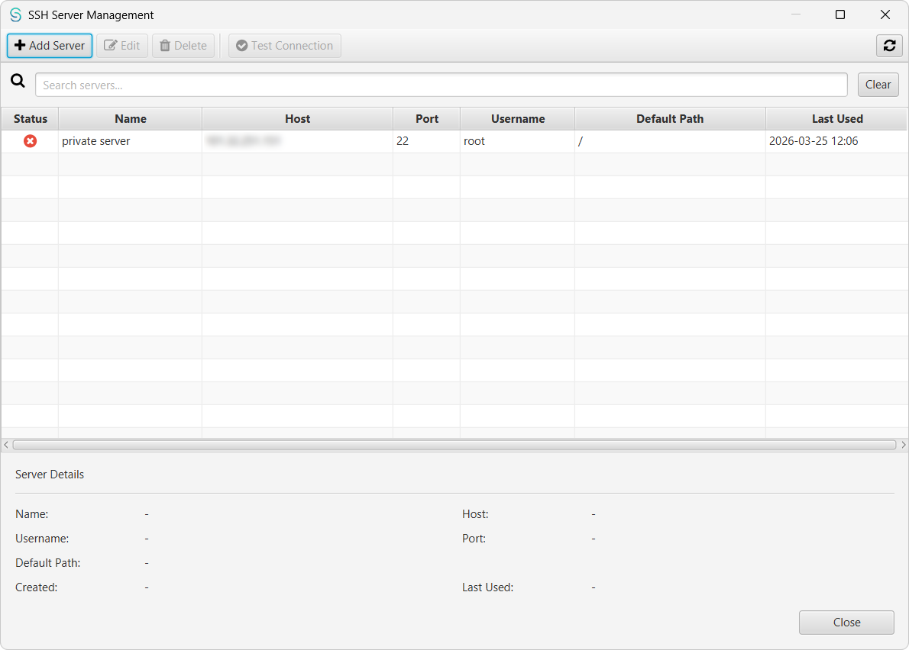

Getting Started
SeeLoggyPlus is a fast, lightweight log viewer for developers and operations teams. Browse local log files, monitor remote servers in real-time over SSH, and pinpoint issues quickly with powerful search and filtering.
Quick Start
- Open a log file via File → Open Local File, or select one from the Recent Files panel.
- Type a keyword in the search bar to highlight and locate matching entries.
- Click the Tail button to monitor a file for new entries in real-time.
- Add an SSH server under Settings → Server Management to browse and tail remote logs.

Main Interface
The workspace is organized into the following areas:

| Menu Bar | File operations, view toggles, settings, and help. |
| Toolbar | Search bar, tail toggle, follow tail, reload, and quick actions. |
| Left Panel | Recent files list. Click any entry to reopen it. Can be pinned or collapsed. |
| Log Viewer | The central canvas displaying log lines with line numbers, log-level coloring, and search highlights. |
| Search Result Panel | Appears on the right when a search is active. Lists all matched lines with click-to-jump. |
| Detail Panel | Bottom panel showing the full content of the selected line, with JSON/XML prettify. |
| Status Bar | Current line position, total line count, and memory usage. |
Opening Local Files
You can open a local log file in several ways:
- File → Open Local File — opens a standard file picker.
- Recent Files panel — click any previously opened file to reload it.
- File → Unified File Manager — browse your file system with a built-in file preview.

Large files are indexed in the background. A progress indicator appears in the toolbar during indexing; once complete, the full file is available for instant navigation.
Remote File Browser
Connect to remote servers over SSH to browse, download, and open log files without leaving the application.
Steps
- Register a server in Settings → Server Management.
- Open File → Unified File Manager and select the server from the dropdown.
- Navigate the remote file system and double-click a file to download and open it.

Tail Mode
Tail mode streams new log entries as they are written, similar to
tail -f on Linux. It works for both local and remote files.
Local Tail
With a local file open, click the Tail button in the toolbar. New lines appended to the file appear automatically.
Remote Tail
For remote files, tail mode opens a persistent SSH connection and streams output in real-time.

Follow Tail
When Follow Tail is active, the view stays pinned to the bottom so you always see the latest entries. Scrolling up pauses follow automatically; scrolling back to the bottom re-enables it.
Search & Filtering
The search bar in the toolbar provides fast, flexible text search across the entire log.

| Feature | Description |
|---|---|
| Incremental search | Results update as you type, with a short debounce to avoid flicker. |
| Regex | Enable the Regex checkbox to use regular expressions. |
| Case Sensitive | Enable Case Sensitive for exact-case matching. |
| Boolean operators | Combine terms with AND, OR, NOT (e.g. ERROR AND timeout). |
| Highlight | Matching text is highlighted in yellow throughout the log viewer. |
| Navigation | Press F3 / Shift+F3 to jump between matches. |
| Position indicator | The toolbar shows "N of M" to track your current position. |
Search Result Panel
When a search produces results, a panel slides in on the right listing every matched line.

- Each row displays the line number and content, with matching text highlighted.
- Click any row to jump directly to that line in the log viewer.
- Supports both vertical and horizontal scrolling for long lines.
- In tail mode, new matches are appended to the list automatically as they arrive.
Detail Panel
Click or arrow-key to a log line to display its full content in the bottom panel. This is especially useful for inspecting long entries or embedded structured data.

- Auto Prettify JSON — Formats embedded JSON for readability.
- Auto Prettify XML — Formats embedded XML.
- Copy — Copies the panel content to the clipboard.
- The panel can be pinned open or collapsed via the pin icon.
Keyboard Shortcuts
| Shortcut | Action |
|---|---|
| F1 | Open this help page |
| Ctrl+O | Open a local file |
| Ctrl+F | Focus the search bar |
| F3 | Jump to next search match |
| Shift+F3 | Jump to previous search match |
| Ctrl+G | Go to a specific line number |
| Ctrl+R | Reload the current file or tail session |
| ↑ / ↓ | Move selection up / down in the log viewer |
| Page Up / Page Down | Scroll one page up / down |
| Ctrl+Home | Jump to the first line |
| Ctrl+End | Jump to the last line |
| Ctrl+C | Copy selected lines to clipboard |
| Escape | Clear the current search |
Preferences
Open via Settings → Preferences. All settings are persisted locally and apply immediately after saving.

General
| Font Size / Family | Font used in the detail panel and file previews. |
| Max Memory (GB) | Maximum JVM heap size. Requires a restart to take effect. |
Log Viewer
| Tail Window Size | Maximum number of lines retained in the tail buffer (default 20 000). |
| Preview Line Limit | Number of lines shown when previewing a file in the file manager. |
| Auto Prettify JSON / XML | Automatically format structured data in the detail panel. |
SSH
| Download Threads | Parallel threads used when downloading remote files. |
| Connection Timeout | SSH connection timeout in seconds. |
| Download Directory | Folder where downloaded remote files are saved. Defaults to the system temp directory. |
| Clean Downloads | Deletes all previously downloaded files from the download directory. |
Server Management
Add, edit, and remove SSH server connections via Settings → Server Management.

| Add | Register a new server with host, port, username, and password. |
| Edit | Update an existing server's configuration. |
| Delete | Remove a server from the list. |
| Test Connection | Verify connectivity before saving. |
Troubleshooting
The application runs out of memory
Increase Max Memory in Preferences → General and restart the application.
Remote connection fails
- Double-check the host, port, and credentials in Server Management.
- Ensure SSH is enabled and reachable on the remote server.
- Try increasing the Connection Timeout in Preferences.
Search feels slow on very large files
Search runs in parallel across multiple CPU cores. If a regex pattern causes excessive backtracking, try simplifying it. Plain-text and boolean searches are generally faster than complex regex.
Tail mode shows stale data after switching files
The view should reset automatically. If stale content persists, press Ctrl+R to force a reload.